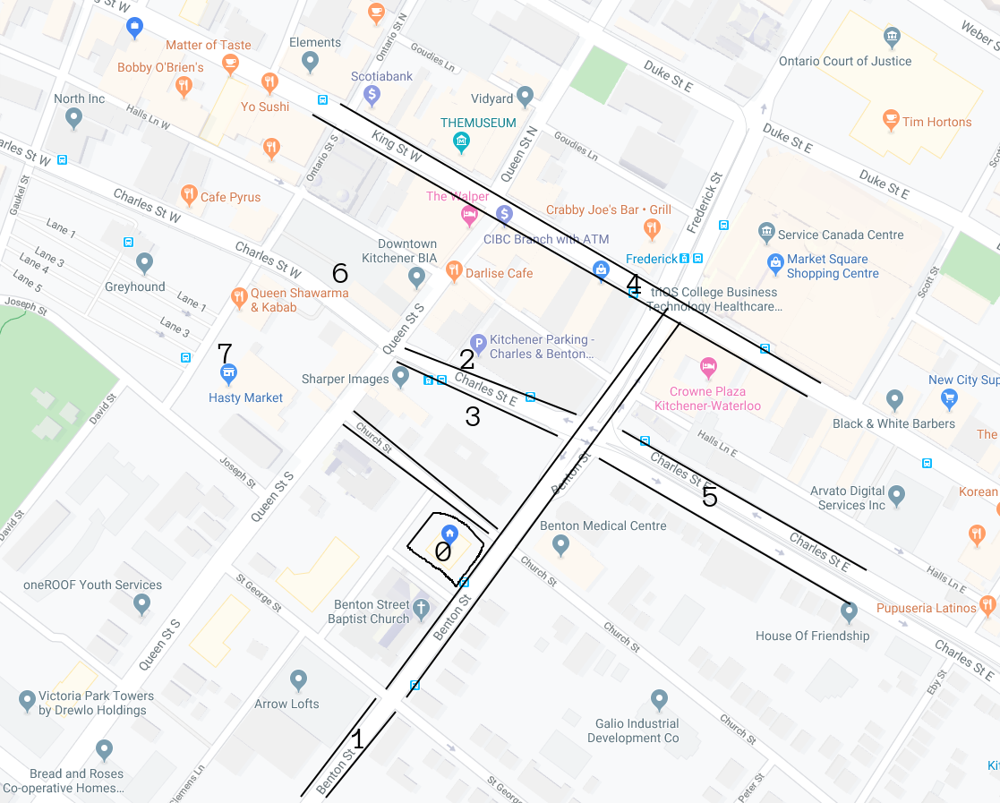
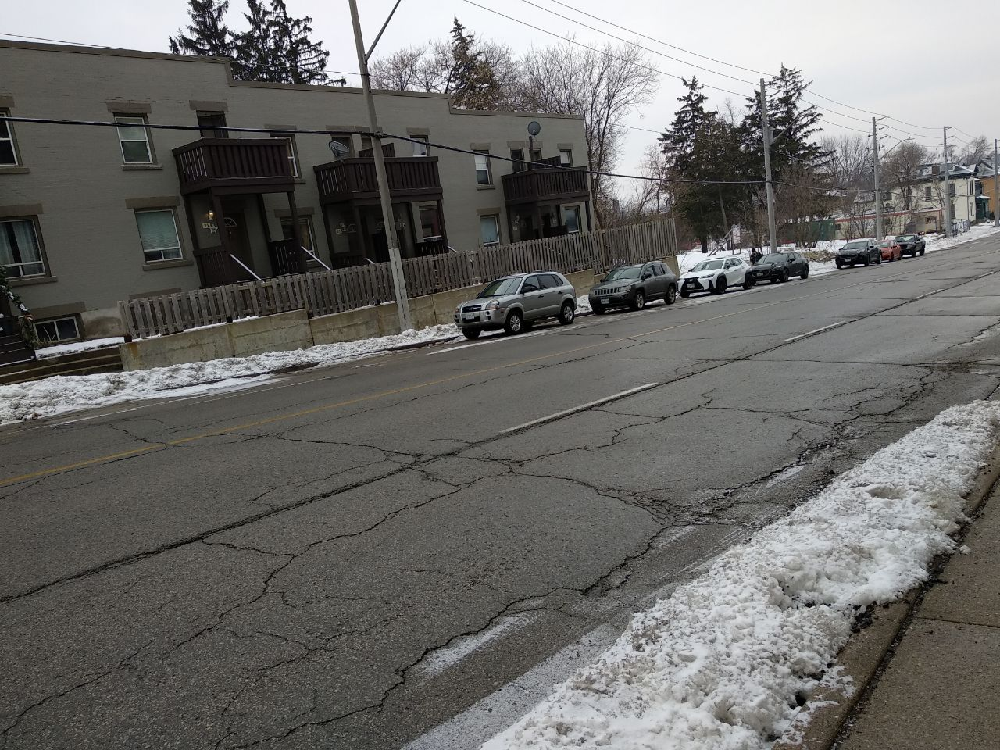
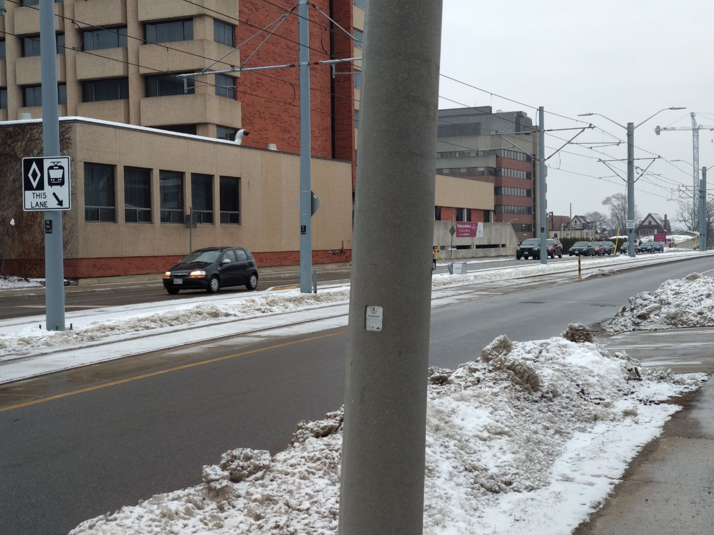
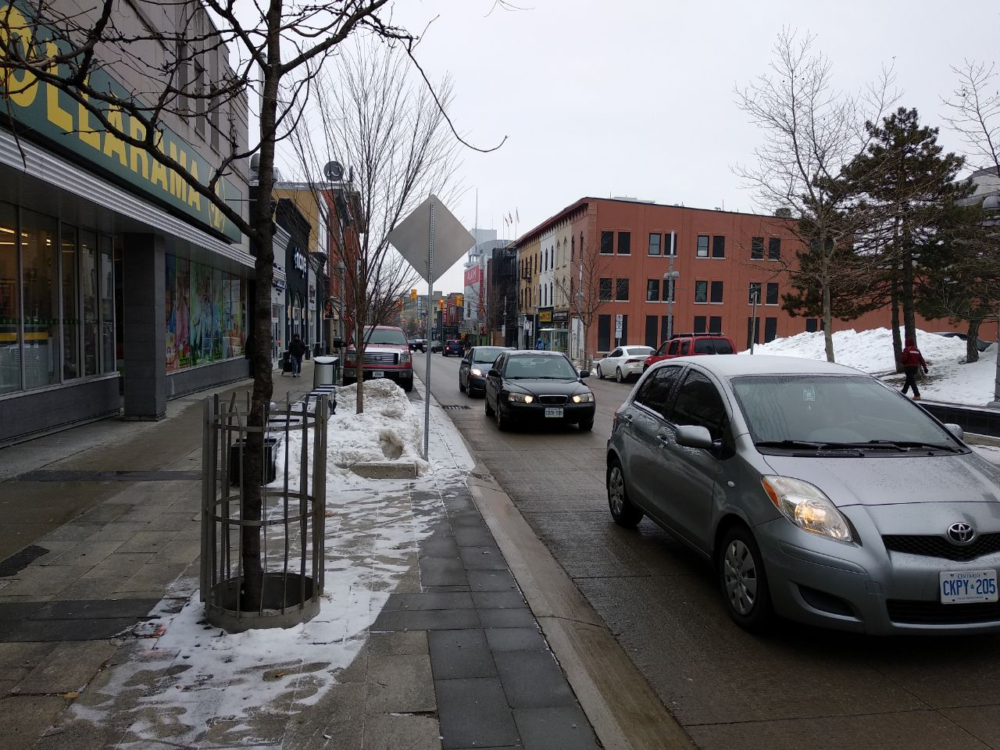
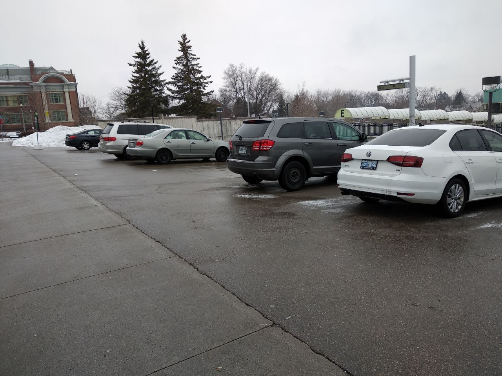
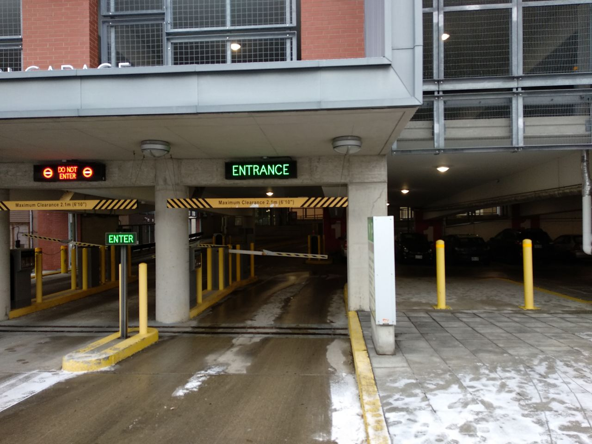
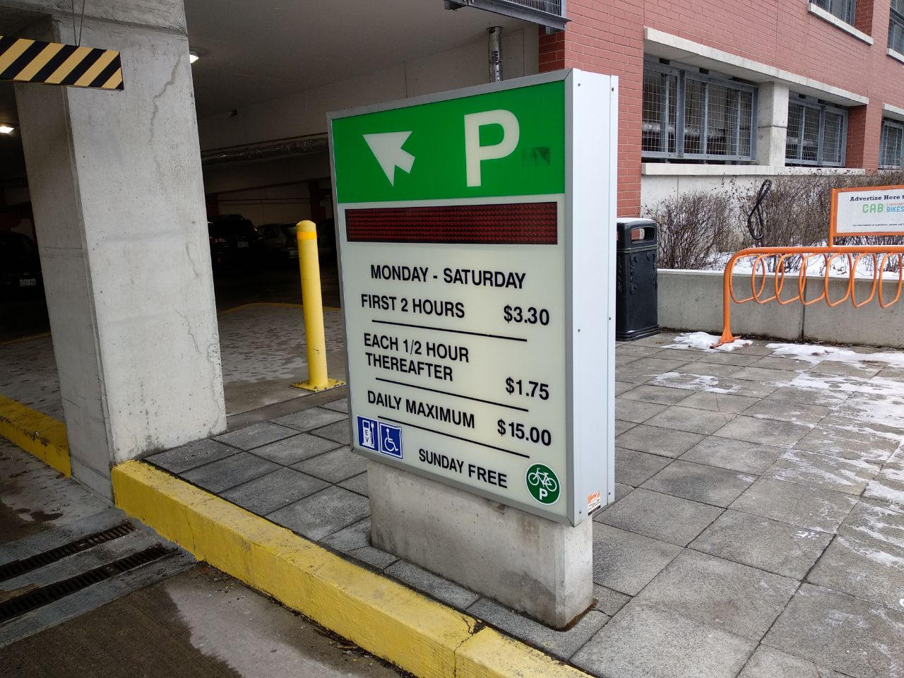
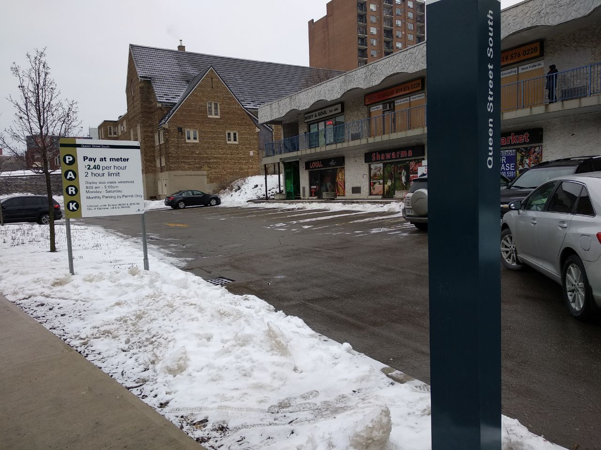
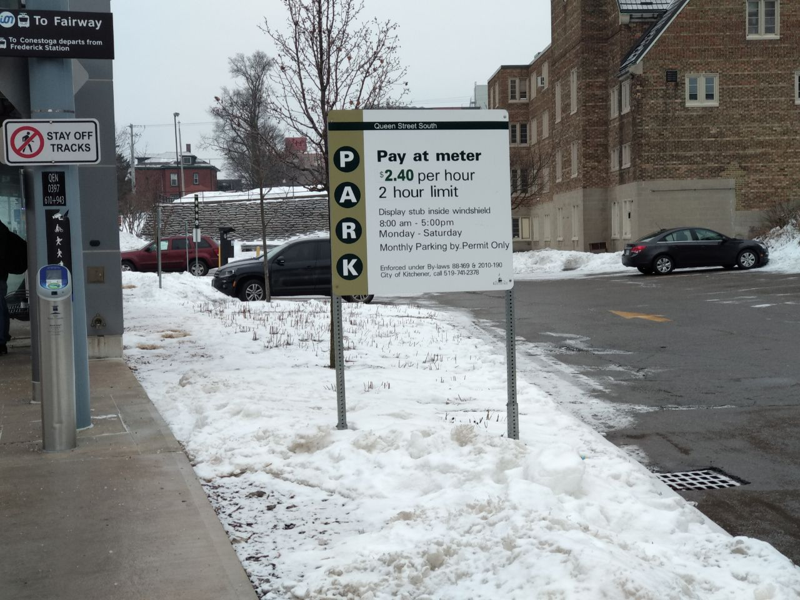
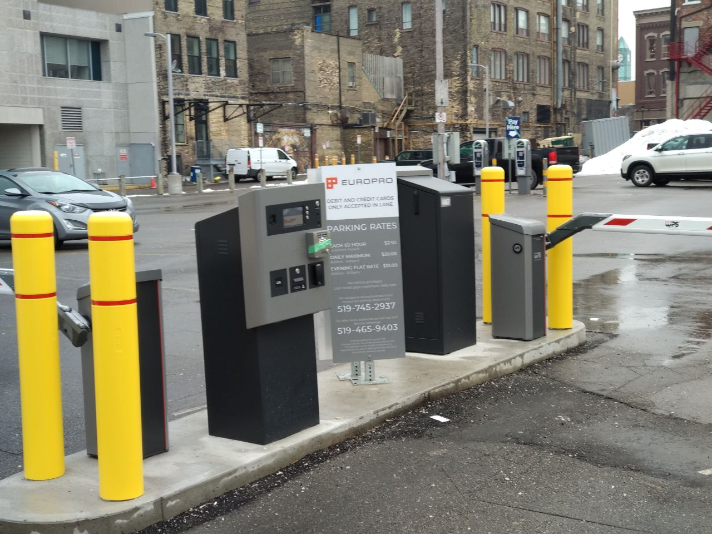

Hi! This is a comprehensive guide with all information I could gather around how to park near Benton Street.
So let's start with a map:

As you can see, 0 is your destination. And indeed there are no parking spots on Benton Street right in front of 0.
However, there are several options nearby, that I will list below, split into Street Parking and Off-Street Parking.
Street Parking
The simplest solution would be to find an available Street Parking. There are several options for allowed street parking nearby, as I will list below.
Now, of course, each option might be totally full of cars, and therefore, unavailable. As per my inspection there tends to be some open spots on the places I will list, but I can make no guarantee that every single one will be available.
So to counter that, I am listing a few different options to choose from. I find it very unlikely that all of my options would be 100% full and incapable of holding one more car.
However, if it does happen, I will provide alternatives after (c.f. Off-Street Parking).
The closest option would be 1. Following down on Benton Street (or south-west according to Maps) you will find 1.
As you can see in the picture, there are some parked cars, indicating that it's a valid place. Also there is plenty of options to park.
Moving on if that is unavailable, we have 5. That would be up Benton and right on Charles.
As you can see by the photo, there is also plenty of available street parking.
If that is not an option, we can go to 4, which is King Street. King Street is a huge street and all along its sides, cars are allowed to park.
I walk on King Street every day to get to work and every day I notice (1) some parked cars, indicating that is a valid spot and (2) lots of empty space for more cars to park.
Finally, if all that is unavailable, as a last resort, you can try 7. It looks like a "private parking" but there is no sign forbidding parking, as you can see in the picture.
 That place is near the Go Transit terminal, and there are a few options there as well, freely available to taking.Off-Street Parking
If that doesn't work, there are plenty of "private/off-street" parking available as well. I understand now, after deepening my investigations, that most have signs forbidding parking there unless some criteria are met. I understand now you cannot use the parking right beside the building, for example (despite the fact that there are always free spots).
However, there are a few options that have no such signs, or that are more lenient on the conditions.
Since this a sort of last resort, let's bring out the big guns. Option 2 is a gigantic, multi-store parking facility in which I would bet a lot would never not have a single empty space.
As you can see in the picture, here is the entrance to the dungeon. You might think that it's private, and reserved for unknown ghost cars, but think again!
It's freely available through the payment of a very small fee. I would arguee this value is negligible compared to the price I paid you for the service, and I am 100% willing to cover the expenses of parking. You can charge it on my card. It should be less than 10 dollars (probably much less).
On the line of other paid options, in case that one is full, I present, right across the street, 3.
This one is a bit smaller, but is equally very close and another option in case it's cheaper/preferable for some reason.
As you can see in the sign, this one has a different pricing structure. Please not that this one seems to have a max 2h limit (not totally sure what happens after), so that might be something to consider.
If all else fail, we have also option 6.

This is another paid option, but with very accessible prices, as you can see here:
As I said, I'm willing to pay the full cost of parking if these options are select (confident in the fact you will first try the non-paid options and that, as describe in the messages, it would be a cost of around 5 dollars depending on the choice and time taken to clean up).
On my queries I also found a few off-street parking options that had no sign, meaning to me that they were not reserved and also free. Of course if you find such option, I encourage you to use it. However I did not include a list as it would take too much work, it would be more likely to be completely full (as they were smaller, and, well, free) and also because I'm not 100% sure on the exact laws on those.